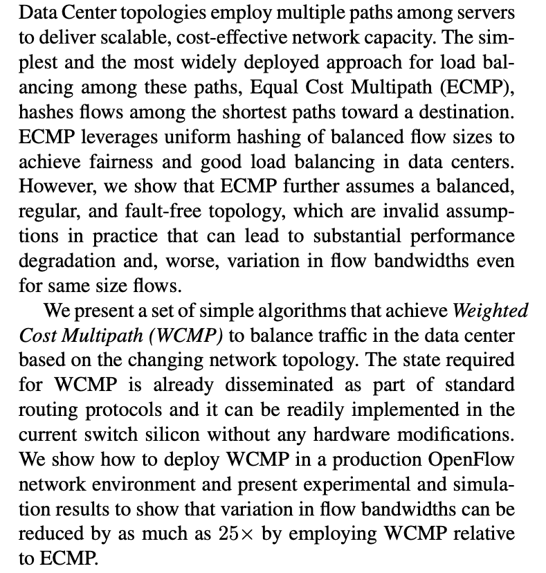
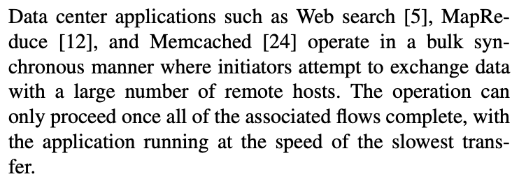
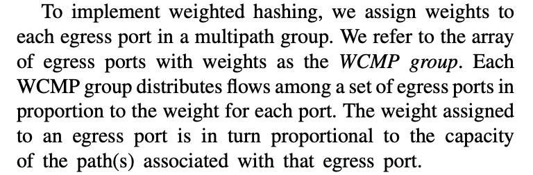
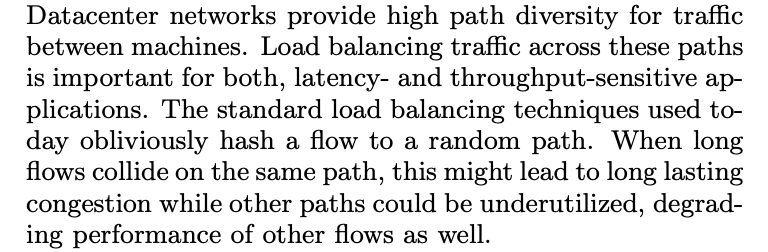
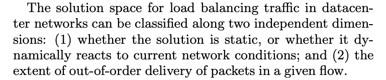
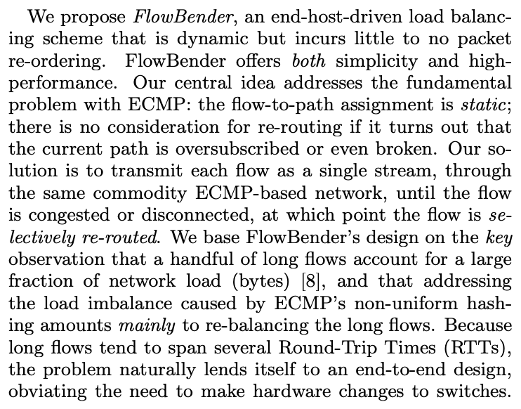

Unit 4 · Data Center Routing
Routing Lab
Two jobs are running slowly. What changed in the network, and how should we respond?
Observe each run, explain the slowdown, and test a routing policy. Compare how long it takes the last flow to finish.
We encourage you to use AI as a discussion partner while preparing. Ask it to explain unfamiliar concepts, discuss the readings, and challenge your interpretation of the simulation.
Read before you run (18 min)
Read the excerpts below in order. Then complete the WCMP Exercise before starting the simulation. Each excerpt includes a link to the original PDF.
WCMP (9 min)
Citation and permissions
Junlan Zhou, Malveeka Tewari, Min Zhu, Abdul Kabbani, Leon Poutievski, Arjun Singh, and Amin Vahdat. 2014. WCMP: Weighted Cost Multipathing for Improved Fairness in Data Centers. Proceedings of the Ninth European Conference on Computer Systems (EuroSys ’14), Article 5, 14 pages. DOI: 10.1145/2592798.2592803.
Permission to make digital or hard copies of all or part of this work for personal or classroom use is granted without fee provided that copies are not made or distributed for profit or commercial advantage and that copies bear this notice and the full citation on the first page. Copyrights for components of this work owned by others than ACM must be honored. Abstracting with credit is permitted. To copy otherwise, or republish, to post on servers or to redistribute to lists, requires prior specific permission and/or a fee. Request permissions from permissions@acm.org. Copyright © 2014 ACM.
The problem (4 min)
PDF page 1, Abstract. Read both paragraphs in full: lines 1–12 of paragraph 1 and lines 1–11 of paragraph 2.

Open WCMP, PDF page 1Why bandwidth fairness matters (2 min)
PDF page 3, Section 2.2, paragraph 1, lines 1–7. Read the first two sentences, starting at “Data center applications such as Web search” and stopping after “the speed of the slowest transfer.”

Open WCMP, PDF page 3The proposed solution (3 min)
PDF page 4, Section 3.1, paragraph 2, lines 1–7. Start at “To implement weighted hashing” and stop after “associated with that egress port.”

Open WCMP, PDF page 4
FlowBender (9 min)
Citation and permissions
Abdul Kabbani, Balajee Vamanan, Jahangir Hasan, and Fabien Duchene. 2014. FlowBender: Flow-level Adaptive Routing for Improved Latency and Throughput in Datacenter Networks. Proceedings of the 10th ACM International Conference on Emerging Networking Experiments and Technologies (CoNEXT ’14), 149–160. DOI: 10.1145/2674005.2674985.
Permission to make digital or hard copies of part or all of this work for personal or classroom use is granted without fee provided that copies are not made or distributed for profit or commercial advantage, and that copies bear this notice and the full citation on the first page. Copyrights for third-party components of this work must be honored. For all other uses, contact the owner/author(s). Copyright is held by the author/owner(s).
The problem (2 min)
PDF page 1, Abstract, paragraph 1, lines 1–8. Start at “Datacenter networks provide” and stop after “degrading performance of other flows as well.”

Open FlowBender, PDF page 1Two ways to compare approaches (2 min)
PDF page 2, Introduction, paragraph 3 (the first on this page), lines 1–5. Start at “The solution space for load balancing” and stop after “in a given flow.”

Open FlowBender, PDF page 2The proposed solution (4 min)
PDF page 2, Introduction, paragraph 4 (the second on this page), lines 1–18. Start at “We propose FlowBender” and stop after “obviating the need to make hardware changes to switches.”

Open FlowBender, PDF page 2
How FlowBender uses ECN (1 min)
A congested switch can mark a packet using Explicit Congestion Notification (ECN). The receiver echoes the congestion signal in its acknowledgment, so the sender learns that the packet encountered congestion along the path. If the fraction of acknowledgments reporting congestion exceeds a threshold, the sender changes a packet header value that the switches use for hashing. Subsequent packets in the same flow may then take a different path.
WCMP · Figure 2(a) · About 10 min
Follow the 12 flows
Twelve flows travel from the source switch to the same destination. Every link shown has a capacity of 10 Gb/s. At the start, ECMP assigns three flows to each of the source switch’s four uplinks.
- Flows assigned
- 12 / 12
- Slowest flow
- 1.67 Gb/s
Step 1 of 2
Why do some flows get less bandwidth?
Step 2 of 2
Maximize the slowest flow’s rate
Assign all 12 flows. Find a split that gives the slowest flow as much bandwidth as possible.
Success! Every flow gets 2.5 Gb/s.
Each link into the destination carries four flows. Uplinks A and B share one downstream link, so their total matters. The paper illustrates WCMP’s 1:1:2:2 hashing weights with a split of 2, 2, 4, 4.
Drag flows from the bank onto an uplink arrow or card. You can also select a flow and then select a card. The arrows show how many flows each link carries.
How to use the simulation
The numbered hosts on the left send packets to one receiver on the right. Packets travel along two paths, A and B. Color and number identify each flow. The diagram shows each path’s capacity and the packets waiting in its queue.
In each case, run the healthy network first, then see what changes. Use the diagram to diagnose the slowdown. Predict what a routing policy will do, test it, and compare how many cycles it takes for the last packet to arrive. Answer the review questions and bring one observation to class.
Visual guide to the simulation
Senders and data packets
Numbered hosts on the left send data to one receiver on the right, with each packet’s number and color identifying its flow.
Links and capacity
Paths A and B each contain parallel links, and every solid link can forward one packet per cycle while a dashed link is down.
Queues and ECN marks
Colored blocks show waiting packets, and the switch marks data packets with ECN when the queue reaches the congestion threshold, shown by a white outline.
ECN feedback and FlowBender
Gold ACK packets carry ECN feedback from the receiver to each sender, and FlowBender uses the fraction reporting congestion to decide when to try a new hash input.
Queue graph
After a trial, compare the queue over time with the dashed ECMP baseline and use the path selector to inspect either path.
Completion-time table
The table below each trial compares cycles until all packets arrive for every policy you have run in that case, with fewer cycles meaning a faster finish.
- Baseline
- Observe
- Diagnose
- Test
- Compare
Bring one observation to class
Your answer is saved in this browser. Bring it to the discussion. It is ungraded.
Network simulation
Numbered colored circles are data packets. Dashed links are down. A white outline means the switch marked a data packet with ECN.
Gold ACKs return ECN feedback to senders. FlowBender uses this feedback to decide when to try rerouting.
Run results
Queue length by cycle
Each line ends when the last packet arrives in that run.